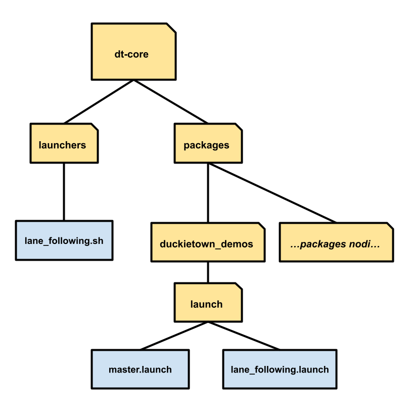

Personalizzare il Lane Following in Duckietown
La presente guida ha l’obiettivo di descrivere come personalizzare la funzionalità di lane following in Duckietown. Dopo aver illustrato la struttura dello stack software della funzionalità in questione, verranno descritti i passaggi da seguire per apportare modifiche al codice ed eseguire la demo così modificata.
Struttura del Codice

Il software impiegato da Duckietown nei suoi duckiebot è basato sull’uso di Docker. Il codice di Duckietown è dunque costituito da container (e immagini corrispondenti) organizzati nella gerarchia sopra riportata.
Il codice che va a costituire lo stack software della funzionalità (nonché demo) lane following è contenuto nella immagine dt-core, la quale contiene tutte le funzionalità di alto livello del duckiebot. Questa immagine usa come base dt-ros-commons, alla base di altre importanti immagini quali dt-duckiebot-interface (contenente i driver per l’hardware) e dt-car-interface (contenente tutto il necessario per guidare il duckiebot).
Il codice sorgente di dt-core può essere agevolmente studiato su GitHub, partendo da qui. Come accennato in precedenza, il lane following non è l’unica funzionalità implementata da dt-core. Per poter attivare il lane following è necessario eseguire il comando
dts duckiebot demo --demo_name lane_following --duckiebot_name <DUCKIEBOT_NAME> --package_name duckietown_demos
come illustrato in questa pagina della documentazione ufficiale. Questo comando è però un “wrapper”, la cui chiamata avvia la demo in base ai seguenti passaggi:
- Attraverso l’uso di lane_following.sh viene eseguito il comando
dt-exec roslaunch --wait duckietown_demos lane_following.launch. - Nel file lane_following.launch vengono specificati i nodi ROS facenti parte dello stack software, ma viene anche chiamato master.launch specificando il “lane following”.
- Il file master.launch, con l’input “lane following”, si occupa di effettuare il remapping di tutti i topic ROS interessati e di includere nello stack software tutti nodi che compongono il lane following, anche quelli che non si trovano in lane_following.launch.
- Per effetto di master.launch, vengono chiamati i file di lancio di tutti i nodi che compongono lo stack software, ciascuno memorizzato nel package del nodo corrispondente.
Nell’immagine seguente è mostrato come sono disposti i file sopracitati in dt-core.

I nodi che compongono lo stack software sono memorizzati in appositi package, i quali si trovano nella directory “packages” di dt-core. I package principali sono i seguenti:
- Line Detector: Il nodo LineDetectorNode effettua una correzione del colore e ritaglia l’immagine ricevuta dalla videocamera, crea una copia BGR dell’immagine, converte l’immagine nel modello HSV e poi applica l’algoritmo di Canny; infine va ad estrarre i segmenti di linea dall’immagine basandosi su un range di colori e sulla trasformata di Hough.
- Ground Projection: Il nodo GroundProjectionNode va a proiettare i segmenti di linea individuati nell’immagine sia sul piano del terreno che nel sistema di riferimento del robot, facendo uso di una matrice di omografia.
- Lane Filter: Il nodo LaneFilterNode crea un filtro (del tipo “histogram grid filter”) il quale, ricevendo in input i segmenti calcolati da LineDetectorNode, restituisce una stima della posa del robot, ovvero la coppia formata da deviazione laterale e angolare dal centro della carreggiata.
- Lane Control: Il nodo LaneControllerNode calcola i comandi di controllo attraverso un controllore PI con tecnologia “anti-reset windup”, il quale riceve in input l’errore nella posa relativa del robot e restituisce in output i comandi in termini di velocità lineare e velocità angolare.
Fanno però parte dello stack software anche i seguenti package:
- Anti Instagram: Il nodo AntiInstagramNode fa uso di funzionalità di AntiInstagram, contenuto nel package Complete Image Pipeline, per aiutare il nodo LineDetectionNode nell’esecuzione dei suoi compiti.
- Complete Image Pipeline: Contiene numerose funzionalità, come quelle dell’AntiInstagram sopracitato oppure la funzionalità di calibrazione estrinseca, che genera la matrice di omografia impiegata da GroundProjectionNode.
- FSM: Il nodo FSMNode realizza una macchina a stati finiti.
- Visualization Tools: Fornisce strumenti di visualizzazione quali i nodi LanePoseVisualizer e LineSegmentVisualizer.
Nella immagine seguente viene mostrato come i nodi facenti parte lo stack software del lane following (in arancione) interagiscono (attraverso i topic ROS) con gli altri nodi attivi nel duckiebot (in azzurro).

Modificare lo Stack Software
Poniamo ora come obiettivo quello di descrivere una procedura per apportare modifiche allo stack software della demo lane following. L’idea di base è quella di modificare uno o più package che compongono la pipeline della demo e poi integrare i package modificati nello stack software, così da poter avviare la demo modificata con lo stesso comando impiegato per avviare la demo “originale”. Di seguito si suppone di lavorare con un duckiebot di tipo DB18: l’architettura di base è dunque arm32v7, e il codice sorgente appartiene al ramo daffy (quello implicitamente considerato in precedenza).
Avviare la Demo
Già in precedenza è stato illustrato che per poter avviare la demo lane following è necessario eseguire il comando
dts duckiebot demo --demo_name lane_following --duckiebot_name <DUCKIEBOT_NAME> --package_name duckietown_demos
che si rivela essere un “wrapper” per il comando
roslaunch duckietown_demos lane_following.launch veh:=<DUCKIEBOT_NAME> robot_type:=duckiebot robot_configuration:=DB18
Prima di avviare la demo è necessario assicurarsi che i container dt-duckiebot-interface e dt-car-interface siano in esecuzione; questo può essere fatto da terminale o attraverso Portainer. Fatto questo, è possibile eseguire il comando mostrato sopra: se la demo non è mai stata eseguita, questo porterà il duckiebot a scaricare l’immagine duckietown/dt-core:daffy-arm32v7. Questa non solo è l’immagine della demo “standard” del lane following, ma è anche l’immagine utilizzata come base per la nostra versione modificata.
Personalizzare la Demo
Per poter operare sullo stack software è necessario non solo l’interfaccia a riga di comando del proprio PC, ma anche di quella del proprio duckiebot. Quest’ultima può essere acceduta attraverso SSH con il comando
ssh duckie@<DUCKIEBOT_NAME>.local
eseguito dal proprio PC; è normalmente richiesta una password - di default quackquack.
Si può ora procedere con il modificare la demo lane following attraverso i passaggi seguenti:
-
All’interno del duckiebot, ri-taggare l’immagine
duckietown/dt-core:daffy-arm32v7con il comandodocker tag duckietown/dt-core:daffy-arm32v7 duckietown/dt-core:backuped eliminare il vecchio tag con il comandodocker rmi duckietown/dt-core:daffy-arm32v7. -
All’interno del proprio PC, clonare la directory
dt-coreda GitHub con il comandogit clone https://github.com/duckietown/dt-core(di default nel ramo daffy). -
Copiare dalla directory
dt-core/packages/i package che si intende modificare e apportare le modifiche desiderate. -
Spostare tutti i package modificati in una cartella <pkgs_dir>. Si sconsiglia di utilizzare il nome “packages”, poiché potrebbe creare conflitti.
-
Copiare nel duckiebot la cartella <pkgs_dir> utilizzando il comando
scp -r <pkgs_dir>/ duckie@lugia.local:/home/duckie. Si suppone di essere nella directory in cui si trova <pkgs_dir>, altrimenti sarà necessario specificare il percorso (relativo o assoluto). -
Creare un Dockerfile come segue:
FROM duckietown/dt-core:backup
WORKDIR ${CATKIN_WS_DIR}/src/dt-core
ARG PACKAGES
COPY ./${PACKAGES} ./${PACKAGES}
RUN \cp -rf ./${PACKAGES}/* ./packages
RUN rm -r ./${PACKAGES} -
Supponendo di aver creato il Dockerfile nel proprio PC, copiare nel duckiebot il Dockerfile utilizzando il comando
scp Dockerfile duckie@lugia.local:/home/duckie. Si suppone di essere nella directory in cui si trova tale file, altrimenti sarà necessario specificare il percorso (relativo o assoluto). -
Nel duckiebot, spostarsi nella directory in cui sono memorizzati <pkgs_dir> e il Dockerfile; come risultato dei comandi precedenti la directory è
/home/duckie. -
Eseguire il comando
docker build -t duckietown/dt-core:daffy-arm32v7 --build-arg PACKAGES=<pkgs_dir> .nel duckiebot.
Una volta terminati questi passi, si potrà avviare la demo come di norma con il comando
dts duckiebot demo --demo_name lane_following --duckiebot_name <DUCKIEBOT_NAME> --package_name duckietown_demos
Il comando avvierà la versione modificata del lane following, basandosi essa sulla nostra versione dell’immagine duckietown/dt-core:daffy-arm32v7.